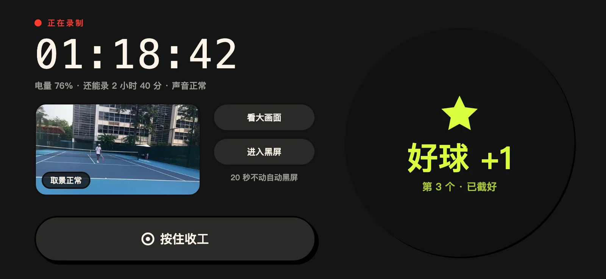
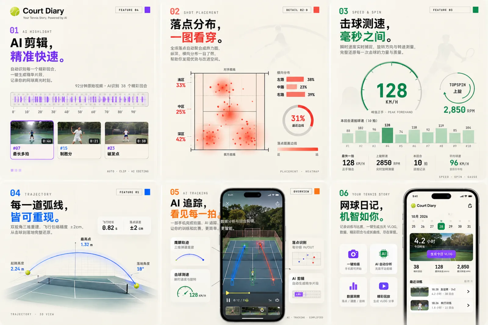

Court Diary
场上流着汗不看屏幕就能盲按记好球；赛后用自训声纹网络先滤掉 85%+ 捡球时长，再对高光片段跑后训练球轨迹模型与物理平滑，三次点击直出朋友圈合集。
- 角色
- 个人独立全栈：盲操状态机设计、iOS/Watch 实现、声纹与视觉模型训练
- 应用形态
- iOS + Apple Watch 协同应用（TestFlight 实测中）
- Stage 1 声纹粗剪
- 自训声纹网络（混响 + 喘息抗噪增强 + 近场能量双门控）
- Stage 2 轨迹精修
- 每秒切片 + 后训练 GridTrackNet + 刚体运动学抛物线平滑
 点击放大
点击放大
手上有汗、心率 160、正午强光时，室内设计好的交互立刻失效。
没法盯屏幕，更不可能点二级菜单
手机架在底线围网外数米远；走近或抬手腕时，汗水、喘息和反光让人根本看不清小按钮。
两小时录像里 85% 都在捡球
一场球 90~120 分钟、1080p/60fps 逾 30 万帧；在手机上拖进度条找十几个好球太耗神，大部分录像最后只能删掉。
把极端户外异常当一等公民，所有手势都有明确阈值。
| 交互与状态机环节 | 核心参数与规则 | 解决的真实问题 |
|---|---|---|
| 右半屏巨型热区 | 轻点 = 好球；按住 0.6s = 超级好球；3s 内连点自动合并升级 |
不用找按钮；避免激动连点切出两条重复片段 |
| 防误触与触觉闭环 | 每次标记留 5s 撤销窗口；结束需按住 1.5s；Watch 两短振确认 |
凭手腕触感确认落盘；防擦汗或放口袋误停录制 |
| 开录前 8 秒防黑屏缓冲 | 录制中 8s 无操作进黑屏省电，但开录首 8 秒强制保持亮屏 |
点开录后球友要退后半步看取景框，立刻黑屏会被误判死机 |
| 朋友圈 60 秒容量计 | 赛后左滑舍弃、右滑保留，顶部实时显示 60 秒进度槽 | 直观知道已挑够一条满格朋友圈，消除剪辑时长焦虑 |
| 全量异常兜底 | 覆盖来电中断恢复（完整保存/部分恢复/损坏说明）、低存储预警、只打表未录手机、0 标记全场、< 1 分钟超短场 |
户外异常即日常，每项边界都有确定性的挽救路径 |

点击放大声纹先砍掉 85% 废片，视觉只跑高光每秒切片。
直接在端侧对 2 小时 4K/60fps 视频全量跑视觉轨迹网络，会让 iPhone 严重发热降频且堆满捡球假轨迹。正确解法是双阶段算力解耦：极轻量的自训声纹网络充当守门员，把昂贵的视觉检测收敛到不足 15% 的高光时间窗内。
亲手调权重、洗脏数据趟过的六个深坑。
全量跑 30 万帧太慢且爆内存 → 声纹粗剪 + 1 秒微批次切片
解法先用声纹网络百倍实时扫音轨砍掉 85%+ 死球，再把召回的高光窗按 1 秒连续帧切为固定维度时空张量送入 GridTrackNet，锁死端侧内存防 OOM。
开源权重是高空转播视角，底线 1.5 米平视机位下远端球仅 3×3 像素，白鞋与白线频繁假阳性
解法采集平视机位远端小目标与白鞋交界错分帧做困难负样本（Hard Negatives）后训练；后接刚体速度/加速度上限滤波剔除单帧瞬移，并用二阶重力抛物线样条插值补齐 2~4 帧遮挡。
干净语音库训出的声纹上场就漂移，隔壁场喊「好球 / Out」频繁误触发
解法采集球场底噪（击球声、球鞋摩擦、风噪、混响 RIR）与喘息态口令做多信噪比混音增强；推理端要求「声纹余弦相似度 + 近场瞬态能量包络」双门控同时达标。
球友打完才喊口令，固定往前切 8 秒会让短球带废片、长拉锯被腰斩
解法把声纹触发点当「回合结束锚点」，往前回溯连续击球声脉冲与首次抛球/过网帧，动态伸缩起点，精准对齐「发球前 1 秒 → 得分后 1.5 秒」。
灯光球场慢快门把高速网球拉成半透明细长残影，基于圆点特征的检测器漏检
解法利用自研录制端优势锁定 60fps 短快门压制拖影；同时在 GridTrackNet 后训练集中加入定向运动模糊核增广，让模型定位残影几何中心。
室外高温录视频本就临近发热上限，边录边跑视觉 15 分钟即降频黑屏
解法录制期零视觉推理，只记时间戳锚点与音频；收工后第 1 秒先基于锚点与声纹出粗剪供挑球，后台仅对保留片段异步跑轨迹渲染。

点击放大模型只做候选与增益，决定权和保底路径永远留给人。
| 信号层级 | 产品中的角色 | 异常或低置信度降级策略 |
|---|---|---|
| 01 · 手动盲操标记 | 最高优先级，100% 置顶进入赛后 60 秒挑选队列 | 无 AI 依赖保底；全天关闭 AI 开关，3 次点击出片闭环依然跑通 |
| 02 · 独立声纹网络 | 秒级召回本人语音口令，过滤 85%+ 拾球废片 | 低置信片段标为待确认；未注册声纹自动降级为击球能量密集峰值策略 |
| 03 · 后训练 GridTrackNet | 校准回合起止拍，渲染平滑网球飞行弧线 | 逆光或连续遮挡无法闭合抛物线时，自动隐藏残缺轨迹层，输出干净原片 |
TestFlight 实测进展与下一步。
做对的取舍
- 异常兜底先于花哨功能：来电、断连、强光、低存储全部逐项闭环，才扛得住球友真机实测。
- 声纹 + 视觉两阶段解耦：先用极低算力把问题缩小一个数量级，让端侧深度学习真正可用。
- 神经网络叠加物理先验：用刚体运动学与样条平滑修正单帧假阳性，比盲目堆参数更有效。
当前迭代焦点
- 双打多声纹协同：目前主要锚定录制者本人，正在扩展搭档双声纹快捷绑定，实现按人头分拣高光。
- 跨场地底色泛化：持续补充红土、室内深蓝地胶与黄昏侧逆光困难样本，进一步压低误检。
rstack — 自进化 AI 编程工作流 →
Claude 负责决策与契约、Codex 负责侦察与施工；配合每周复盘与反事实重放，连续四期追踪 W45–W47。